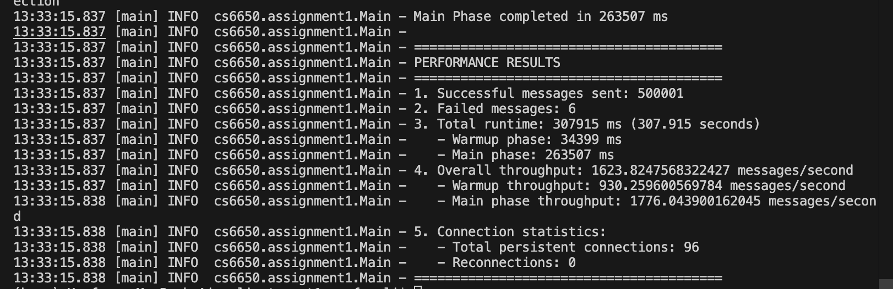
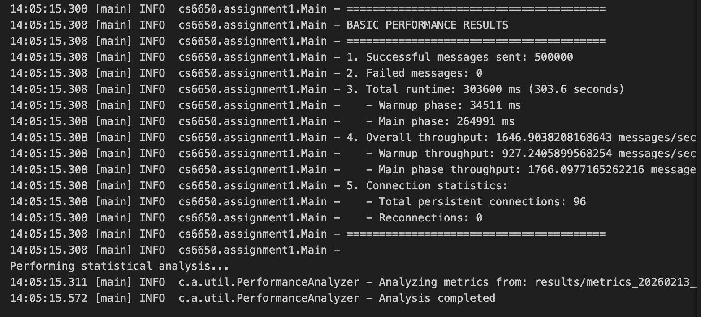
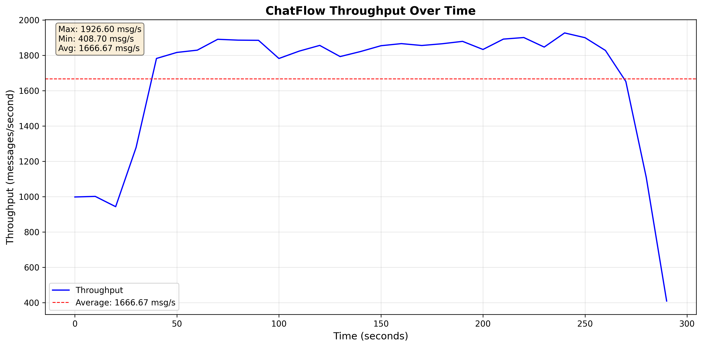

https://github.com/yimdx/ChatFlow
┌─────────────────────────────────────────────────────────────────┐
│ Client Layer │
├─────────────────┬───────────────────────┬───────────────────────┤
│ MessageGenerator│ MessageSender │ ChatWebSocketClient │
│ (Producer) │ (Consumer) │ (Connection) │
│ - Generates 500K│ - 32 warmup threads│ - Persistent conn │
│ - BlockingQueue │ - 64 main threads │ - Per-thread socket │
└─────────────────┴───────────────────────┴───────────────────────┘
/ \
│ WebSocket (ws://{ip}:{port}/chat/{roomId})
\ /
┌─────────────────────────────────────────────────────────────────┐
│ Server Layer (EC2) │
├─────────────────┬───────────────────────┬───────────────────────┤
│ HealthCheckServer│ ChatWebSocketServer │ │
│ (Port 8080) │ (Port 8081) │ │
│ - HTTP REST │ - WebSocket Protocol │ │
│ - /health │ - /chat/{roomId} │ │
└─────────────────┴───────────────────────┴───────────────────────┘
/ \
│
\ /
┌─────────────────────────────────────────────────────────────────┐
│ Validation & Processing │
│ MessageValidator → ChatMessage → ChatResponse │
└─────────────────────────────────────────────────────────────────┘
ChatWebSocketServer (Main Server)
WebSocketServer from Java-WebSocket libraryonOpen, onMessage, onClose, onError
ChatMessage and return ChatResponse^/chat/(\\d+)$HealthCheckServer (HTTP Health Endpoint)
HttpServer from JDK/health endpoint on port 8080{"status":"healthy"}MessageValidator
ChatMessage fields (username, message length, etc.)Models:
ChatMessage: Request model (userId, username, message, timestamp, messageType, roomId)ChatResponse: Response model (includes serverTimestamp, status)ErrorResponse: Error handling modelMessageGenerator (Producer Thread)
RunnableBlockingQueue<ChatMessage>MessageSender (Consumer Thread)
RunnableBlockingQueueChatWebSocketClient (WebSocket Connection)
WebSocketClient from Java-WebSocket libraryPart 2 Additional Classes:
MetricRecord: Records per-message metrics (timestamp, latency, room)CsvWriter: Writes metrics to CSV for analysisPerformanceAnalyzer: Calculates statistics (mean, median, p95, p99, throughput per room)ThroughputVisualizer: Generates throughput-over-time analysisGenerator Thread (1 thread)
BlockingQueueWarmup Phase (32 threads)
Executors.newFixedThreadPool(32)Main Phase (64 threads)
64Thread Lifecycle:
Thread Start → Create WebSocket → Connect (blocking)
↓
For each message:
→ Take from queue (blocking)
→ Send message
→ Wait for response (1s timeout)
→ Increment success/fail counter
↓
Close WebSocket → Thread Exit
Synchronization Mechanisms:
BlockingQueue<ChatMessage>: Thread-safe message queueAtomicInteger: Lock-free counters (success, failure, reconnections)ExecutorService: Managed thread lifecycleConcurrentHashMap for thread-safe room managementDesign Decision: Each thread maintains ONE persistent connection for its entire lifecycle.
Key Properties:
L = λ × W
Where:
λ (lambda) = Throughput (requests/second)
L = Concurrency (number of simultaneous requests)
W = Average response time (seconds)
Measured Values from Warmup:
Ideal Throughput
# for warmup phase
λ = 32 concurrent threads/ 34 ms
λ ≈ 1k messages/second
# for main phase
λ = 64 concurrent threads/ 34 ms
λ ≈ 1.9k messages/second


========================================
STATISTICAL ANALYSIS
========================================
Total Messages: 500000
Mean Response Time: 34.02 ms
Median Response Time: 32.00 ms
95th Percentile: 50.00 ms
99th Percentile: 68.00 ms
Min Response Time: 1 ms
Max Response Time: 281 ms
Message Type Distribution:
LEAVE: 24923 (5.0%)
JOIN: 24857 (5.0%)
TEXT: 450220 (90.0%)
Message Count Per Room:
Room 1: 40560 messages
Room 2: 36560 messages
Room 3: 7312 messages
Room 4: 9312 messages
Room 5: 17624 messages
Room 6: 30248 messages
Room 7: 7312 messages
Room 8: 8312 messages
Room 9: 7312 messages
Room 10: 22936 messages
Room 11: 38560 messages
Room 12: 28936 messages
Room 13: 3000 messages
Room 14: 22936 messages
Room 15: 73152 messages
Room 16: 22936 messages
Room 17: 66808 messages
Room 18: 23936 messages
Room 19: 22936 messages
Room 20: 9312 messages
Throughput Per Room:
Room 1: 136.28 messages/second
Room 2: 138.56 messages/second
Room 3: 29.09 messages/second
Room 4: 33.87 messages/second
Room 5: 59.95 messages/second
Room 6: 104.90 messages/second
Room 7: 29.36 messages/second
Room 8: 30.62 messages/second
Room 9: 30.43 messages/second
Room 10: 79.19 messages/second
Room 11: 128.97 messages/second
Room 12: 100.21 messages/second
Room 13: 87.79 messages/second
Room 14: 76.65 messages/second
Room 15: 278.75 messages/second
Room 16: 77.35 messages/second
Room 17: 226.77 messages/second
Room 18: 80.30 messages/second
Room 19: 77.59 messages/second
Room 20: 32.94 messages/second
========================================
